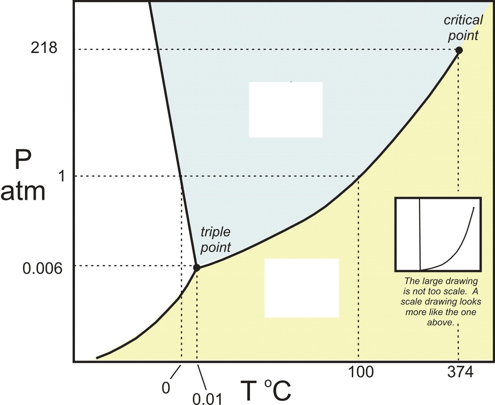

Planetary Habitability
Planetary Habitability#
Now that we’ve learned a bit about exoplanets (how they’re characterized, their orbital mechanics, etc.), you might be curious as to whether such systems could be suitable for some form of life. Could otherworldly beings exist somewhere in our galaxy, secretly planning their voyage to the Earth? Could there even be life elsewhere in our Solar System? In order to consider this prospect, let’s think about what properties make an environment hospitable to life.
Question 1
Imagine the factors that have allowed life to flourish on Earth. What do you believe are the requirements that are necessary for life to arise and thrive on a planet? You might think about such factors as what temperature range is necessary for life, whether life needs light to survive, what kind of atmosphere may be necessary, etc. Discuss with a partner.
As you might have guessed, one of the most important considerations for life is the presence of liquid water. Water is absolutely vital for life on Earth because it is such a great solvent. In chemistry, a solvent is a substance which is able to dissolve another distinct substance (a solute), thereby creating a mixture known as a solution. For example, imagine making a cup of tea. After filling a cup with hot water, you put the tea bag in. You may also add other flavors, such as honey or sugar. The honey and sugar will dissolve in the water, as will the tannins and lignins from the tea leaves; however, the tea leaves themselves will not dissolve. Thus, the hot water is the solvent, and the honey, sugar, tannins, lignins, etc. are the solutes. The tea leaves are what we call insoluble. Solvency of water is extremely important. In our own bodies, for instance, this helps blood to carry electrolytes and nutrients throughout our body and remove waste materials from cells, as well as to suspend red blood cells. It can also facilitate chemical reactions.
Other great characteristics of water are that it is liquid at a wide range of temperatures (0℃ - 100℃, or 32℉ - 212℉ on the surface of the Earth), and that it changes temperature slowly. Water is most easily able to transport nutrients and other materials within bodies, ecosystems, etc. when it is in liquid form. The fact that it changes temperature slowly helps with temperature regulation, such as in the human body.
The environments in which water can exist in liquid form depend on temperature and pressure. We can determine the range of temperatures and pressures for which is the case from what is called the phase diagram for water, shown below:
The y-axis is pressure, which is measured in units of atmospheres. The surface pressure of the Earth is 1 atmosphere. The x-axis is temperature, measured in degrees Celsius. Each of the three segments in the diagram represents a combination of pressures and temperatures for which water is in gas form, liquid form, or solid form.
Question 2
Based on what you know about the temperatures at which water is in ice, liquid, and gas form on Earth’s surface, label the three regions in the phase diagram above with the words “ice”, “liquid”, and “gas”.
Question 3
Earth’s average surface temperature is about 15℃. Draw a circle labelled “E” where Earth is on the above diagram.
Question 4
Mars’ average surface pressure and temperature are about 0.006 atmospheres and -55℃. Draw a circle labelled “M” where Mars is on the diagram. Can pure liquid water exist on Mars’ surface?
Mars’ temperature can vary a bit, ranging from -153℃ at the poles to 20℃ at the equator during midday. Is there any time at which pure liquid water can exist on Mars’ surface? What happens to the state of water on Mars’ surface as the temperature increases?
Mars’ surface temperature and pressure have changed over time. Early on in its existence, Mars’ pressure may have been around 1.5 atmospheres, with a temperature of about -20-0℃. Could pure liquid water have existed on ancient Mars?
Quesiton 5
Q5a) How about Venus? Currently, Venus’ surface pressure is a whopping 90 atmospheres (about the same pressure as 1 km under the surface of Earth’s oceans), and its temperature is an incredible 462℃. Draw a circle labelled “V” at Venus’ position on the diagram. Can pure liquid water exist on its surface?
Question 6
Could liquid water have existed on ancient Venus, when its pressure was only about 1 atmosphere and temperatures were around 40-100℃?
As you can see, planetary environments can change; Venus’ surface, for instance, became much more highly pressurized and hot as time went on. We won’t go into detail about it here, but the changes on Venus’ surface resulted from an increase in the Sun’s energy output over time, which caused Venus’ surface water to evaporate into the atmosphere. Since water is a greenhouse gas like carbon dioxide, it helped to trap heat, leading to a substantial increase in pressure and temperature.
Challenge
Water has proven to be a vital chemical for life on Earth due to its nature as a universal solvent. However, water doesn’t have to be the only option available when it comes to solvent; ammonia and methane have been proposed as possible alternatives. Can you imagine any problems with using either one in place of water? (Hint: consider each substance’s phase diagram and the conditions in which they are liquid; use Google to find the diagram for each solvent.)
Now that we know that the presence of liquid water is dependent on temperature and pressure, let’s consider how we can estimate the surface temperature of the exoplanets we’ve been characterizing. The situation we’ll be considering is an extremely simplified one, one in which the effects of the presence of an atmosphere or an ocean will not be considered.
We can estimate the temperature of a planet by setting the amount of energy that it gets from its star equal to the amount of energy that it radiates away. After doing some math (which I can show you if you’re really interested), we get the simple relation below:
Here, \(R_*\) is the radius of the star, \(a\) is the semi-major axis, and \(T_*\) is the temperature of the star.
Great! Now we have an equation that relates the temperature of a planet to its orbit and the properties of its star. (Hint: 1 \(R_{\odot}\)= 0.00465 AU). We’re also going to calculate temperature in Kelvin, the preferred temperature scale of science, which is a constant offset from Celsius such that \(T_K = T_C + 273\). For instance, 0℃ = 273 K, or 1000℃ = 1273 K)
Question 7
At what range of semi-major axes would the Earth have liquid water? Are any other planets in the Solar System in the “habitable zone”? (Hint: rearrange the above equation for \(a\). Remember that water freezes at 0 ℃ and boils at 100 ℃. The Sun has a temperature of 5770 K.)
Question 8
Most of the stars near our Sun are much smaller and cooler. For instance, the nearest star to the Sun is Proxima Centauri. Proxima Centauri has a radius of 0.14 \(R_{\odot}\) and a temperature of 3040 K. What range of semi-major axes can water-hosting planets have around Proxima Centauri?
Question 9
One of the most exciting discoveries of the past few years was a planet around Proxima Centauri. The planet has an orbital period of 11.2 days. What is the planet’s temperature in ℃? Could this planet host liquid water?
Challenge
Consider Earth’s position in the Solar System (at 1 AU from the Sun). According to the equation above, what should its temperature be? Is this consistent with the true average temperature of the Earth? If it isn’t, can you imagine any reasons why?
As you have seen, the distance at which liquid water can exist within a solar system (which we will define as the habitable zone) depends upon the temperature of its star. Smaller, cooler stars will have habitable zones that are closer to them than larger, hotter stars. This can be explained visually with a plot of the habitable zone of stars, as you will see in your lecture later today:
Question 10
According to this plot, Earth is the only planet in our Solar System which exists in the traditional habitable zone. However, that hasn’t stopped scientists from considering the existence of life among our nearest neighbors! Take a little bit of time to poke around the Internet and see if you can find another body in our Solar System which could possibly host life. Write a little bit about it here: What is its environment like (pressure, temperature, etc.)? Does it support liquid water? What sort of energy source might potential lifeforms use to support themselves?